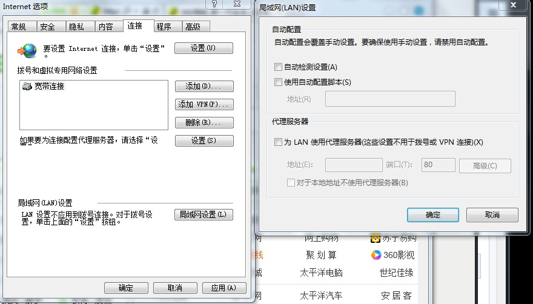

squid实现突破内网上网
导语：实现代理上网的前提：在局域网内有一台可以访问外网的机器，并可以在上面部署squid程序。
简单介绍
在反向代理的领域，squid的市场份额，虽然不断被nginx，apache等新兴的软件占领，并且nginx也提供了缓存功能。但是依然不可掩盖squid的老牌实力。
下面简要介绍下squid的功能及配置。
- 缓存的目录一般在/var/spool/squid，日志目录在/var/log/squid。
- 每通过代理访问一次都可以查看日志目录下面的access.log文件，查看访问记录。
- 可在配置文件中的其他设置
- http_port [IP:]3128 可添加IP或改变端口
- cache_mem 128 MB 可设置squid使用的做缓存的内存大小
- visible_hostname - 可以在状态/错误信息中看到的 hostname
- cache_dir - 指定缓存文件夹
squid还支持acl列表访问控制，例如：
1 | acl ip_acl src 192.168.1.0/24 |
第一行，acl定义列表，ip_acl是任意指定的列表名称，src表示源IP
第二行，允许ip_acl的acl列表里的ip网段内的ip访问
第三行，拒绝所有http访问，除了被允许的ip网段。
突破内网使用squid实现正向代理即可。步骤简单。如下：
在开始之前，使用ping命令保证各机器能连通，保证数据不被防火墙过滤。可关闭防火墙。不然到后面会失败。
安装squid软件
1 | [root@Workbench ~]# yum install -y squid |
修改squid配置
配置文件位于 /etc/squid/squid.conf
修改配置文件
1 | vim /etc/squid/squid.conf |
修改
1 | # And finally deny all other access to this proxy |
检查配置文件并初始化缓存目录
1 | [root@Workbench ~]# squid -k check |
启动squid在后台运行。
1 | #/usr/local/squid/sbin/squid -s |
停止 squid
1 | #/usr/local/squid/sbin/squid -k shutdown |
重启该服务并验证
1 | [root@Workbench ~]# service squid restart |
在不能访问内网的机器上执行
临时使用代理，重启失效
1 | [root@Workbench ~]# export http_proxy=http://[Squid Server IP]:3128 |
永久使用则在/etc/profile末尾加入
1 | export http_proxy=http://[Squid Server IP]:3128 |
然后
1 | [root@Workbench ~]# source /etc/profile |
验证http代理开启成功,若成功使用以下命令会在当前目录下，下载一个index.html文件。
1 | [root@Workbench ~]# wget www.baidu.com |
ps：若需要访问内网的机器需要用ftp，https等协议访问外网。则增加
1 | export https_proxy=[Squid Server IP]:3128 |
现在我们就可以用yum去安装软件或者用浏览器上网了，但是如果使用ping命令去ping百度是不通的。为什么呢？
由于ping命令使用的是ICMP协议是属于网络层的协议，不能通过第七层应用层的代理，并且ping使用的协议不是http或是ftp协议。
如果是windows主机，可以在浏览器的internet选项–>连接–>局域网设置中配置代理服务器。

本文标题：squid实现突破内网上网
文章作者：bellpost
发布时间：2020-07-16
最后更新：2020-07-16
原始链接：https://bellpost@github.io/2020/07/16/use-squid-break-through-the-internet/
版权声明：本博客所有文章除特别声明外，均采用 CC BY-NC-SA 3.0 CN 许可协议。转载请注明出处！